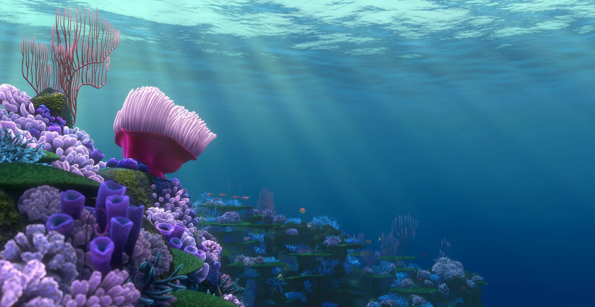
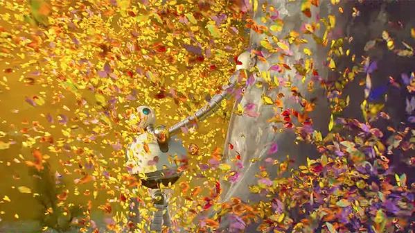
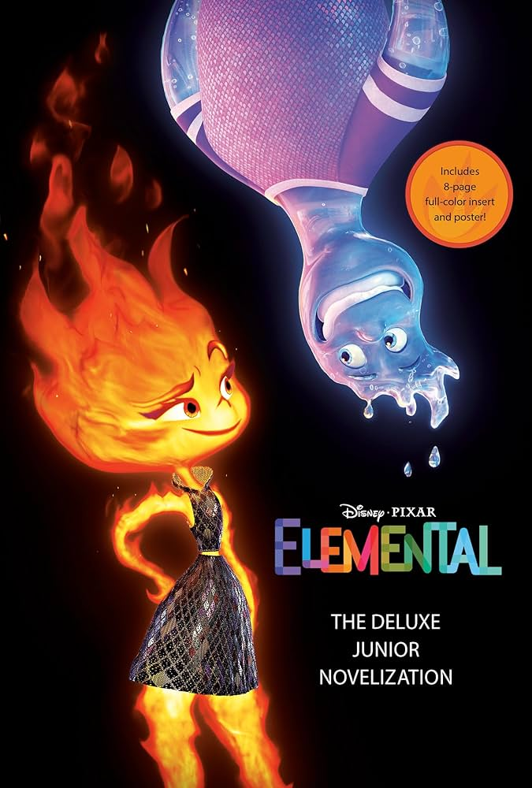
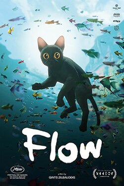
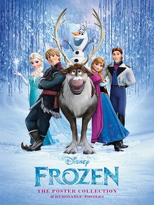
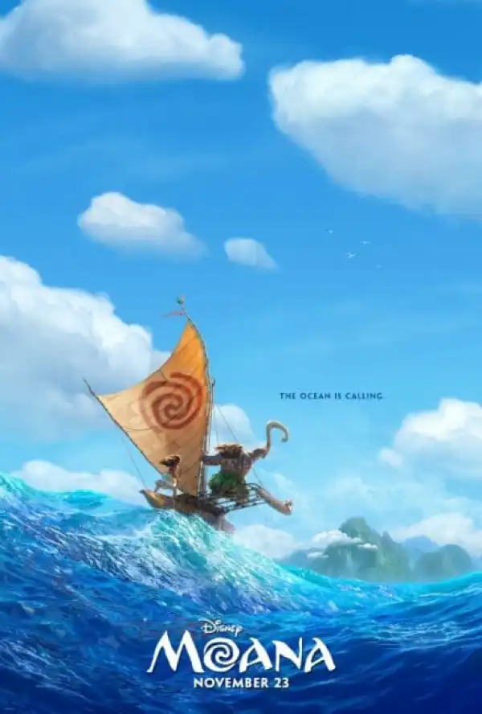
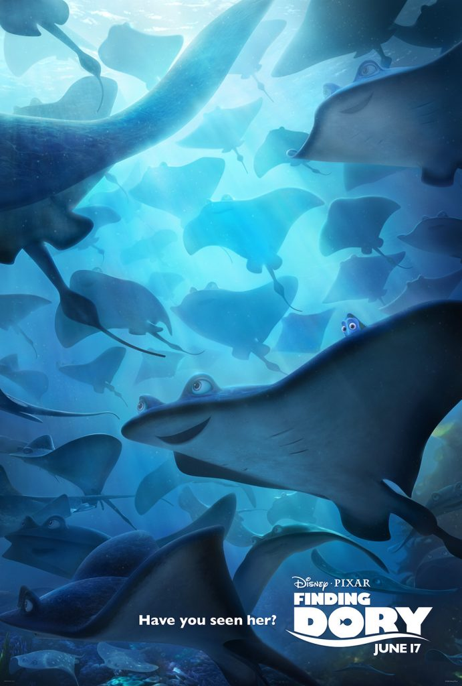
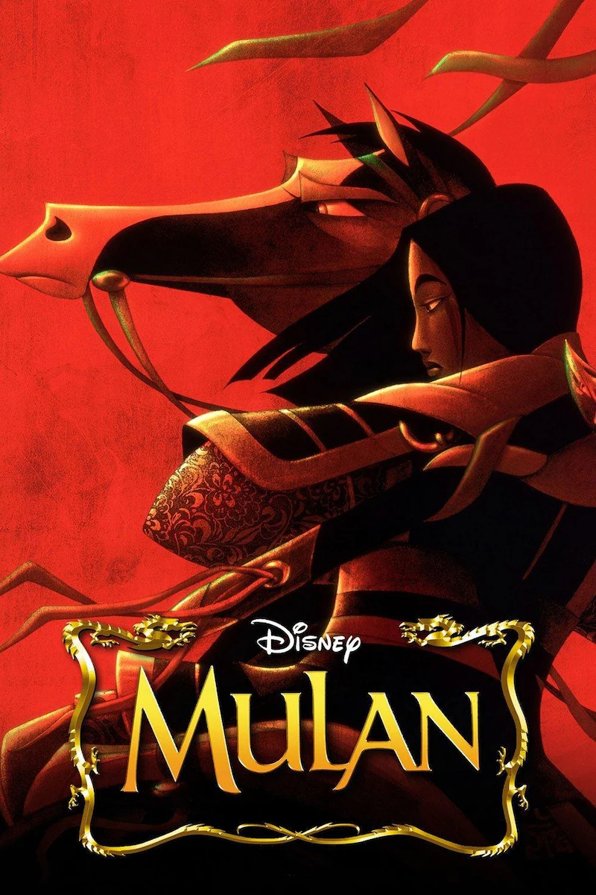

1. Finding Nemo

This is my favorite movie because I watched it a lot growing up with my dad, and because the background design in it. I also really liked the plot of the movie. I think the characters are very wholesome and it teaches really great lessons of perspective and adventure.
2. Wild Robot

I really liked this movie because the art in it is my favorite style, and the plot made me cry, I thought it was a very wholesome movie overall. I really liked all of the visual appealing scenes. I also liked the emphasis of compassion towards others and how it can be learned.
3. Elemental
I liked this movie because it was very heatwarming and I liked the weirdness and imperfection of the characters. This movie also made me cry in scences that showed love and care for others rather than for self.
6. Inside Out

I liked this movie because it showed the different perspectives of others and each of the infulences that they have in their thoughts. This movie also made me cry and I liked the fuzziness of the characters' detail.
5. Big Hero 6

I really liked this movie because it showed that there's a reason behind every action and there's no clear bad guy in the end. I also liked the colors and the animation style. I liked the personalization of each character's development and how it showed the depth behind each motive, while also displaying themes of deep love and compassion.
10. Flow
I really liked the scenes and world building in this film. It made it feel very magical and truly other worldly. I also liked this film because it felt like I didn't have to think too hard about what was happening. The colors and the motion in this movie was really pretty. I also liked the curiosity of the film as a whole.
8. Frozen
I liked this movie mainly because of its plot and the reflection that was on the ice. I thought it was made really well and I cried during the plot. I liked that this movie was about sisterly love rather than romantic love. I also liked the comical scenes as well as the attention to character movement.
9. Moana
I liked this movie because I think it did a really good job of presenting fluidity throughout the character's movement, the envidonment of the ocean, and the details like hair. I liked the use of emotion and character development.
7. Crazy Rich Asians

I liked this movie because I thought it was really funny and it was also a really pretty movie to watch because it takes you through Singapore, and also everything looks really nice because they're really rich. I also liked the point they were making, not only that wealth isn't everything, but it's important to break bad generational cycles.
4. Finding Dory
I liked this movie because it was really pretty and the plot was moving and interesting, it also made me cry. I liked the sense of belonging and family though loved ones who aren't necessarily your family to begin with.
12. Mulan
I liked this movie beccause the plot was good, it was funny, and the songs were pretty good.
11. Lion King

I liked this movie because it looked very fun, colorful, and the plot was good at demonstrating identity.